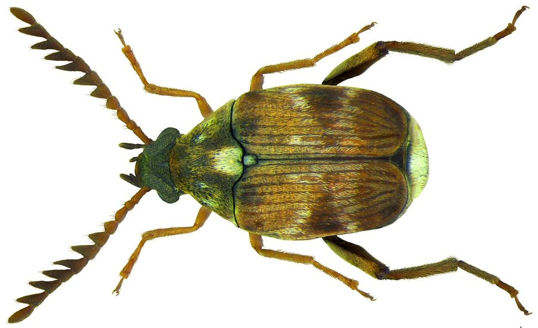

ढोराPulse Beetle
Callosobruchus chinensis · Chrysomelidae · INS-0081

- Scientific nameवैज्ञानिक नाम
- Callosobruchus chinensis (Linnaeus, 1758)
- Familyकुल
- Chrysomelidae
- Hindiहिंदी
- ढोरा
- Local namesस्थानीय नाम
- dhora, dhoda, dal ka ghun, dal ka kida, pulse beetle
- Status hereयहाँ की स्थिति
- native
- Movementआवागमन
- Resident, here all year
- IUCNIUCN
- not evaluated
- Reviewसमीक्षा
- audited and independently read
When to look कब देखें
Present all year.साल भर मौजूद।
Uses and possibilities उपयोग और संभावनाएँ
Drawn from the documented uses in the profile below, where each is labelled traditional, current or a research lead. All uses →
Tell it apart from इनसे अलग पहचानें
ढोरा / Pulse Beetle
Callosobruchus chinensis (Linnaeus, 1758) — Chrysomelidae
ढोरा — दाल और बेसन की सब सब्जी: अरहर, मूँग, मसूर, सब में पाया जाता है। माँ दाल के दाने पर अंडा चिपकाती है, बाहर ही, और लार्वा छेद करके अंदर खा-खाकर बढ़ता है। दाने में छोटा सुराख़ और कीट निकलता है। भंडार में हज़ारों की संख्या में तेज़ी से बढ़ता है। नीम और राख़ से ही इसे रोका जाता रहा है।
Quick Identification त्वरित पहचान
| Feature | Description |
|---|---|
| Size | 3–4 mm long; compact, rounded |
| Colour | Brown to dark brown, with lighter patterns and pale legs |
| Shape | Squat, rounded; hump-backed appearance |
| Head pattern | Head usually darker; antennal insertion visible |
| Punctures | Elytra finely punctate but not grooved |
| Holes in pulses | Circular emergence holes, 1–2 mm in diameter, with fine dust |
| Infested pulse | Grain exterior intact but shrunken; interior hollowed by larva |
| Smell | Musty odour in heavily infested stores; distinctive smell |
Field tip: Infested pulse grains feel lighter and hollow when squeezed. Adult beetles emerge through perfect round holes on the surface. The emergence hole is much larger (1–2 mm) than that of the rice weevil, making identification easy.
हिंदी — कैसे पहचानें: दाल के दाने पर घूमता हुआ छोटा भूरा कीट। दाने पर बड़ा सुराख़। दाल हल्का, खोखला हो गया।
Morphology आकारिकी
Biometrics:
| Measurement | Range |
|---|---|
| Adult body length | 3–4 mm |
| Width | 2–3 mm |
| Egg | 0.8–1 mm, oval, adhering to grain surface |
| Larva (1st to 4th instar) | 0.8–3 mm, whitish, C-shaped |
| Pupation period | 5–10 days inside the grain |
| Total development time | 22–35 days at 25–30°C |
Adult: Compact and squat, broader and more rounded than the rice weevil. Elytra are moderately punctate, lacking the deep grooves of Sitophilus. Legs are relatively long and pale. Antennae are club-shaped, 11-segmented.
Larva: White, C-shaped, with brown head capsule and mandibles. Develops entirely within the pulse grain, feeding on the cotyledons. Four instars; by the final instar the grain is largely consumed and the larva pupates in a chamber just beneath the surface.
Egg: Laid on the grain surface, usually on the hilum or micropyle region; remains external and visible.
हिंदी: छोटा, मोटा कीट, दाल पर। लार्वा सफ़ेद, बिना पैर, दाने के अंदर। अंडा दाने पर चिपका।
Behaviour & Ecology व्यवहार और पारिस्थितिकी
The pulse beetle is the most destructive insect of stored pulses (lentils, chickpeas, pigeon pea, gram) across Asia, Africa and India. It is entirely dependent on dried pulses: unlike the rice weevil, it does not infest living grain in the field and cannot survive on seeds of non-legume plants. Females lay eggs directly onto the grain surface; each egg adheres firmly. The larva bores into the grain and feeds within, emerging as an adult 3–4 weeks later. A single female can lay 50–200 eggs in her lifetime. At 25–30°C and 70% relative humidity, the insect completes a generation in 22–35 days, allowing multiple overlapping generations in a season. Unlike Sitophilus, this beetle does not fly and spreads only through movement of infested grain. However, its rapid reproduction and high fecundity make it the more destructive pest of stored pulses in India.
हिंदी: सिर्फ़ सूखी दाल पर, बाकी पर नहीं। अंडा दाने पर, लार्वा अंदर। गर्मी में महीने भर में तीन पीढ़ियाँ। उड़ नहीं सकता, पर बहुत अंडे देती है।
Life Cycle / Phenology जीवन चक्र
| Stage / season | Event |
|---|---|
| Egg, 4–6 days | Laid on grain surface; externally visible |
| Larva, 12–20 days | Four instars; hollows the grain from inside |
| Pupa, 5–10 days | Inside the grain in a pupation chamber |
| Adult, 1–2 weeks | Emerges through hole; mates and immediately lays eggs |
| Temperature | Below 15°C: development stops; 25–30°C: rapid (22–35 days total) |
| Generations | 3–5 per season in warm storage |
हिंदी: अंडे से वयस्क तक 22–35 दिन। गर्मी में तेज़। एक महीने में सब पीढ़ियाँ एक साथ।
Host Plants or Prey आहार
- Pulses (legumes):
- Pigeon pea (Cajanus cajan)
- Chickpea (Cicer arietinum)
- Lentil (Lens culinaris)
- Mung bean (Vigna radiata)
- Black gram (Vigna mungo)
- Field pea (Pisum sativum)
- Cannot develop on cereals, oilseeds, or non-legume seeds
Predators / Natural Enemies शत्रु
- Parasitoid wasps: Dinarmus basalis, Eupelmus vuilleti (specialists on bruchid eggs and larvae)
- Predatory beetles: Ground beetles that consume exposed eggs and newly-emerged adults
- Ants: will scavenge emerging adults if accessible
- Fungi: Beauveria under high humidity
- Spiders: in field margins before harvest
Agricultural / Human Relevance कृषि प्रासंगिकता
The loss. The major pest of stored pulses throughout the Indian subcontinent and Southeast Asia. Losses in traditional storage can reach 70–80% in 6–8 months. Each infested grain becomes wholly unmarketable and unfit for seed.
Traditional and documented practices:
- Neem leaves: Mixed with dried pulses before storage. Documented to reduce oviposition and lower population growth; the effect is insecticidal rather than merely repellent. ZSI studies (Sharma et al. 2008) confirm 40–60% reduction in damage over 6 months. Leaves require replacement every 2–3 months.
- Wood ash (राख़): Mixed at 5–10% by weight, reduces oviposition dramatically by interfering with female host-finding. Traditional use documented throughout eastern UP (Srivastava et al. 2012). Costs nothing and is non-toxic.
- Sun-drying: Exposure of pulses at harvest to direct sun for 2–3 days at 35–40°C kills eggs and first-instar larvae. Traditional practice, still effective when grain is dried to <10% moisture.
- Oil seed oil (mustard oil, neem oil): A thin coating of oil (1–2% by weight) prevents oviposition and suffocates eggs; traditional in some regions.
- Container sealing: Storage in tightly sealed earthenware pots or glass containers prevents infestation; traditional practice more effective than open storage.
Today. Chemical fumigants (phosphine) in large stores; neem-based formulations and diatomaceous earth in organic protocols.
Research direction (a lead, not a result). Role of parasitoid wasps (Dinarmus basalis) in biological control; extraction and purification of ovipositional deterrents from neem; village-level storage technology combining multiple traditional practices.
हिंदी: दालों का सब से बड़ा दुश्मन। नीम की पत्तियाँ, राख़, धूप में सुखाना, तेल लगाना — सब काम करता है। ढक्कन वाले बर्तन में रखो।
Expected Locally स्थानीय रूप से अपेक्षित
Not a field record. Written from published accounts for eastern Uttar Pradesh. This is the commonest pulse storage insect of eastern UP; any household with stored pulses will have seen it.
अभी तक स्थानीय पुष्टि नहीं। सूखी दाल रखने वाले घर में ही पाया जाता है।
Expected in every household granary storing pulses in Basti district, year-round, with populations highest in warm months (April–September) when stored pulse is also common. A sample of infested pulse grains, with the pulse type, storage date, and duration, would confirm a local record.
Distribution वितरण
Global range: Pantropical; all pulse-growing regions. Native to Asia; now found in Africa, America, and Australia wherever pulses are dried and stored.
In India: Universal in all pulse-storing households and warehouses. Endemic, with highest populations in warmer regions.
In Uttar Pradesh: Widespread in all districts. Particularly destructive in the eastern plains where pulses are a staple.
In Basti district / eastern UP: Present in every household pulse store; year-round; heavier in post-harvest months.
Research Questions शोध प्रश्न
Anyone can investigate these | कोई भी इन प्रश्नों की जाँच कर सकता है
- How many eggs does a single female lay on a cup of gram over her lifetime? / एक माँ ढोरा चने पर कितने अंडे देती है? — Observe one female confined to a pulse cup; count eggs daily until death.
- Does neem leaf protection last longer if the leaves are dried first, or should they be fresh? — Compare fresh and dried neem in parallel pulse stores.
- Which pulse crop (gram, lentil, pigeon pea, mung) is infested fastest? / कौन सी दाल में ढोरा सब से तेज़ी से बढ़ता है? — Infest equal grain samples with one pair; count weekly.
- What is the least expensive effective protective mixture (ash alone, neem alone, oil alone, or combined)? — Cost per kilogram of protected pulse.
- How does storage moisture (8%, 10%, 12%) affect beetle development rate? — Store identical pulse samples at different moisture contents.
Similar Species मिलती-जुलती प्रजातियाँ
| Species | How to tell apart | हिंदी |
|---|---|---|
| Adzuki Bean Beetle (Callosobruchus maculatus) | Very similar; slightly smaller; prefers black gram and mung; requires study of genitalia to distinguish | मूँग/मसूर का ढोरा, बहुत मिलता-जुलता |
| Cowpea Bruchid (Callosobruchus subinnotatus) | Prefers cowpea; slightly different elytra punctation | लोबिया का ढोरा |
| Rice weevil (Sitophilus oryzae) | Snout present; infests cereals not pulses; smaller holes; grooved elytra | चावल का घुन, सुँड वाला |
Field rule: Pulse grain with a 1–2 mm emergence hole, hollowed interior, and small brown rounded beetles on the surface: pulse beetle.
Taxonomy & Classification वर्गीकरण
Original description. Described by Linnaeus in 1758 in Systema Naturae as Bruchus chinensis. The genus Callosobruchus was erected by Thunberg in 1806. Chinensis refers to China, from where the type specimen originated.
Subspecies. Monotypic — no subspecies are currently recognised. However, populations on different pulse hosts show some genetic structure.
Family and order placement. Order Coleoptera (beetles), family Chrysomelidae (leaf beetles), subfamily Bruchinae (seed beetles). The genus Callosobruchus comprises bruchid beetles specialised on legume seeds.
Phylogenetic notes. Callosobruchus chinensis diverged from C. maculatus relatively recently (within the last million years), despite ecological separation by host plant preference. Both are closely related to African Callosobruchus species.
IUCN status rationale. Not evaluated. As a widespread agricultural pest of global importance, it is not assessed by the IUCN.
Photo Gallery फोटो गैलरी
Photos needed आवश्यक फोटो
- [ ] Adult beetle on pulse grain (दाल पर कीट)
- [ ] Pulse grain with emergence hole (सुराख़ वाला दाना)
- [ ] Infested pulse store showing damaged grains (खराब दाल)
No photos yet — add field photos to media/species/pulse_beetle/ and run node scripts/sync_photos.js.
References संदर्भ
- Linnaeus, C. (1758). Systema Naturae, 10th ed. Holmiae. [original description, as Bruchus chinensis]
- Thunberg, C.P. (1806). Coleoptera in Mnemosyne Entomologica, vol. 1. Upsaliae. [genus]
- Sharma, P., Singh, R. & Pandey, U.B. (2008). Efficacy of neem (Azadirachta indica) leaf extract against Callosobruchus chinensis (L.) infesting stored pulses. Indian Journal of Entomology 70(3): 218–224.
- Srivastava, R.P., Das, B.C. & Samant, R. (2012). Storage of Cereals and Pulses for Food Security and Income Generation. ICAR–NCIPM, New Delhi.
- Indian Council of Agricultural Research (2017). Integrated Pest Management Package for Pulses. ICAR–NCIPM, New Delhi.
- GBIF Occurrence Data — Callosobruchus chinensis, India (2023).
Source file: species/fauna/insects/pulse_beetle.md